WebAudit AI brand book
Open-source website intelligence for marketers and developers. The identity is built to be read under pressure: calm surfaces, one signal colour, and evidence in every frame.
An open-source, locally hosted platform that finds, explains and prioritises website quality issues — with evidence.
Precise · evidence-led · calm · technical but approachable · honest about uncertainty.
“Evidence for every fix.” — brand promise: “Turn website complexity into actionable clarity.”
Logo
Concept: A · Inspected Window. A browser window whose chrome bar is intact but whose lower corners open into inspection brackets; a single signal diamond sits where the evidence is found.
primary-horizontal.svg
primary-horizontal-reverse.svgstacked.svgstacked-reverse.svgsymbol.svgsymbol-small.svgmono-dark-horizontal.svgmono-light-horizontal.svgClear space & minimum size
- Clear space
- Half the symbol height on every side.
- Minimum size
- Horizontal lockup 24 px tall (screen) / 8 mm (print). Symbol 16 px — use the small-size master at ≤ 32 px.
- Colour
- Two-tone on navy or white; single-colour when printing one ink.
Don’t
Colour
Semantic tokens from tokens/colors.json; ratios computed live against surface. Toggle the theme to see light values. All 60 required WCAG 2.2 AA pairs pass (qa/contrast-report.md).
#0B12201.07:1 on surface#111A291.00:1 on surface#1621331.08:1 on surface#1D2B401.22:1 on surface#26344A1.39:1 on surface#5F71903.53:1 on surface#F2F6FD16.10:1 on surface#C3CEDD10.96:1 on surface#9AABC27.46:1 on surface#5CE0BE10.69:1 on surface#4ADE9F10.17:1 on surface#FBBF2410.45:1 on surface#F871716.31:1 on surface#7AA7FA7.26:1 on surfaceLight theme
#F6F8FB1.06:1 on surface#FFFFFF1.00:1 on surface#F1F4F91.10:1 on surface#E7ECF31.19:1 on surface#DFE5EE1.27:1 on surface#7C899E3.54:1 on surface#0B122018.72:1 on surface#33415510.35:1 on surface#5662756.18:1 on surface#0B7A665.26:1 on surface#03644A7.18:1 on surface#8A4B066.80:1 on surface#B91C1C6.47:1 on surface#1D4ED86.70:1 on surfaceSeverity & status — never colour alone
Fixed scale in both themes. Every use pairs a distinct icon with its label; "Not tested" additionally uses a dashed outline / 45° hatch in charts.
Typography
Inter for interface and reports; JetBrains Mono for URLs, rule ids, selectors and logs. Both SIL OFL 1.1 — bundled in assets/fonts with licences.
Body 14/21 — Findings are grouped by rule and inferred template, ranked by severity, reach and confidence, and always show the pages they were tested on.
Caption 12 — Lighthouse lab data with simulated throttling.
Mono 13 — M08-TRACKING-BEFORE-CONSENT · https://example.com/pricing?utm=REDACTED
1,491 / 2,016 · 74%
Iconography
Lucide (ISC licence), 1.5–2 px stroke, 16/20/24 px. Category icons below; AI uses one restrained mark and only on AI-generated content.
Illustrations
Built from the logo’s primitives — window bar, inspection brackets, signal diamond. One accent element per illustration.
no-audit.svgscanning.svgaudit-complete.svgno-issues.svgaudit-failed.svgai-disabled.svgnetwork-error.svgno-results.svgempty-history.svgData visualisation
Categorical order is fixed and validated (adjacent CVD ΔE ≥ 8, normal-vision ΔE ≥ 15) in both modes. Light slots 1, 5 and 6 are under 3:1 on white — charts always carry visible labels or a table view.
Categorical — dark
Categorical — light
Sequential (magnitude)
Application UI
Live components styled only with semantic tokens. The production app implements these in apps/web/src/components.
Buttons
URL input
Scan progress
Notification
Data table
| Issue | Severity | Confidence | Affected / tested |
|---|---|---|---|
| Marketing/analytics requests fire before consent M08-TRACKING-BEFORE-CONSENT | High | Potential | 9 / 9 |
| Missing meta description M01-META-DESC-MISSING | Medium | Confirmed | 12 / 122 |
| Main landmark missing M03-AXE-LANDMARK-ONE-MAIN | Low | Confirmed | 5 / 25 |
| Lighthouse lab performance score M02-LH-PERFORMANCE | Not tested | — | 0 / 1 |
Component demo: rule names are real engine rules; counts are illustrative, not scan results.
Partial result
Empty state
No issues match these filters
Remove a filter or search for a rule id.
Voice & messaging
Intelligent but understandable. Evidence-led. Honest about uncertainty. Helpful, never judgmental.
| Avoid | Prefer |
|---|---|
| “Your site scores 62/100.” | “47 issue types across 138 tested pages; 16 rated high.” |
| “GA4 is missing.” | “GA4 was not observed on 16 tested pages.” |
| “You are not GDPR compliant.” | “Trackers fired before any consent choice on 9 pages — an indicator worth reviewing.” |
| “AI found every problem.” | “AI suggestions — hypotheses grounded in the findings above.” |
| “Scan failed.” | “We couldn’t reach that address. Check the URL is public and try again.” |
Digital assets
Rendered by Chromium from HTML sources in assets/*/src. Regenerate with pnpm --filter @webaudit/branding build.
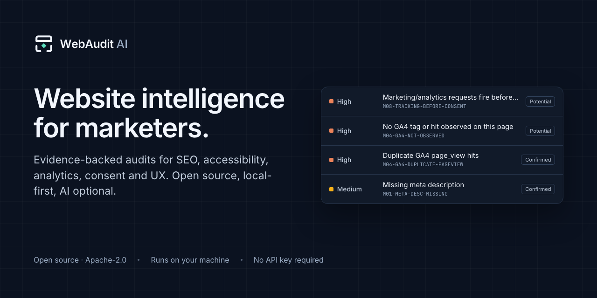
1280×640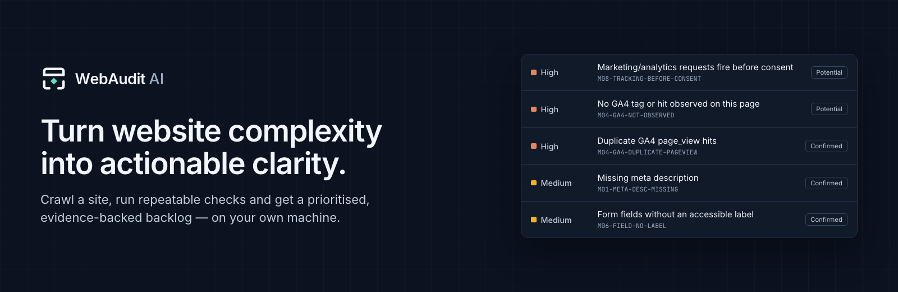
1600×520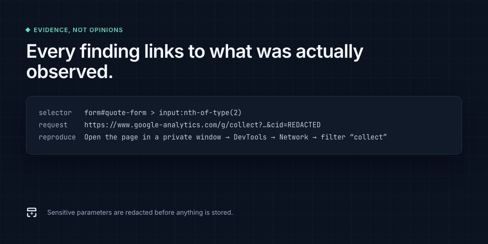
1200×600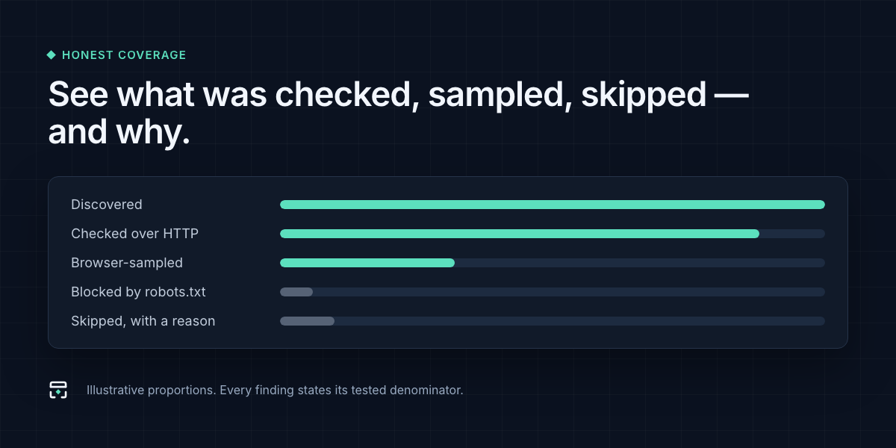
1200×600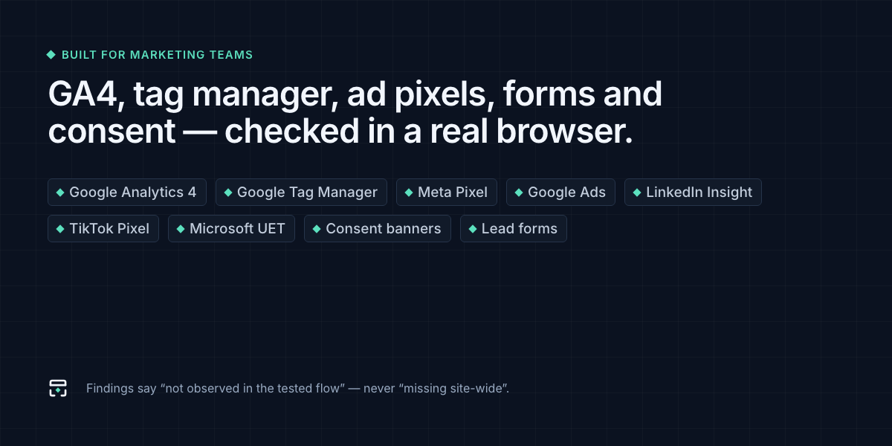
1200×600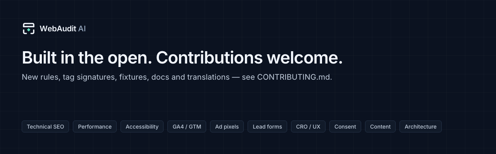
1280×400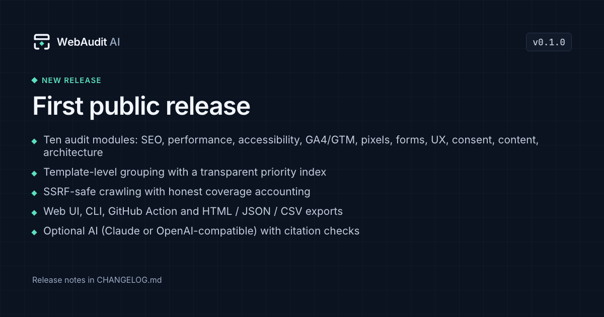
1200×630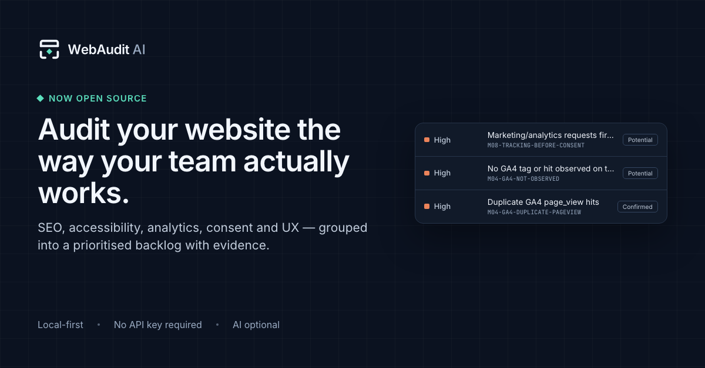
1200×6271080×1080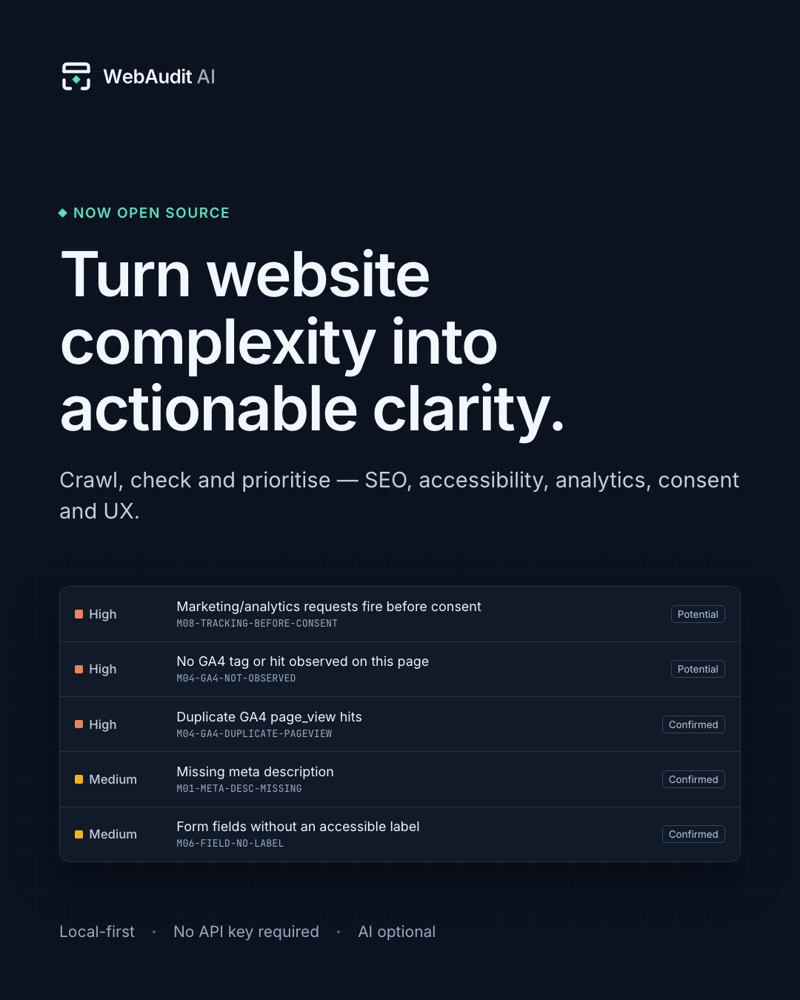
1080×1350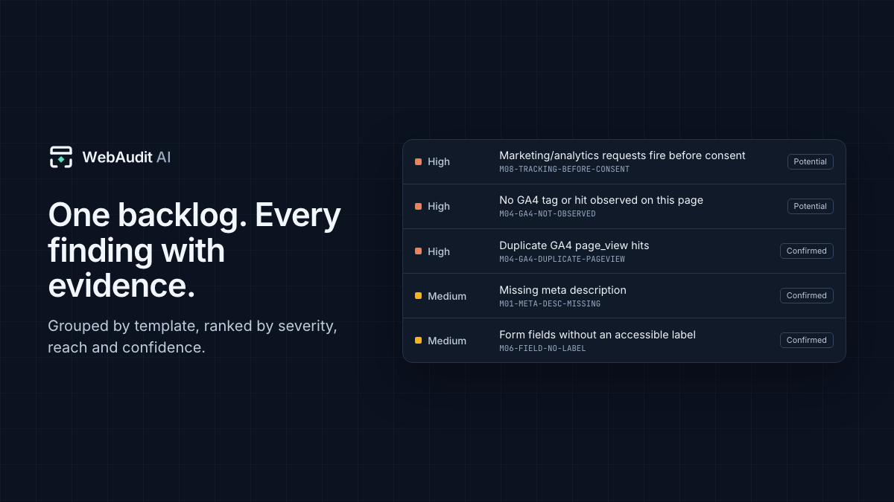
1200×675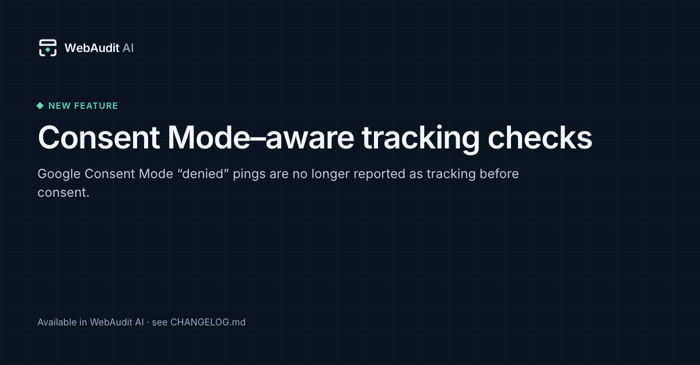
1200×627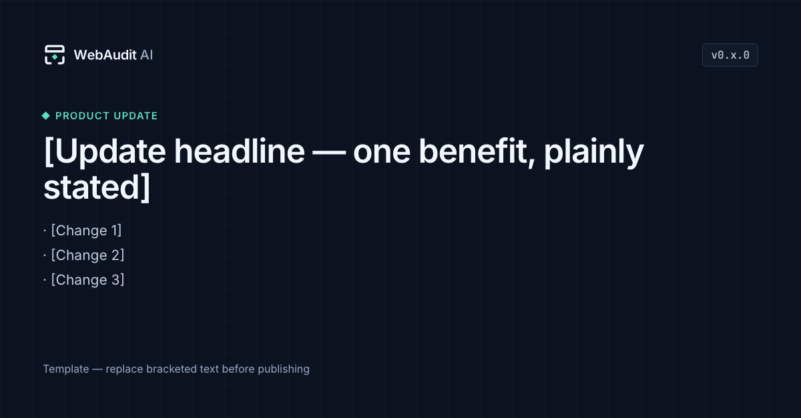
1200×627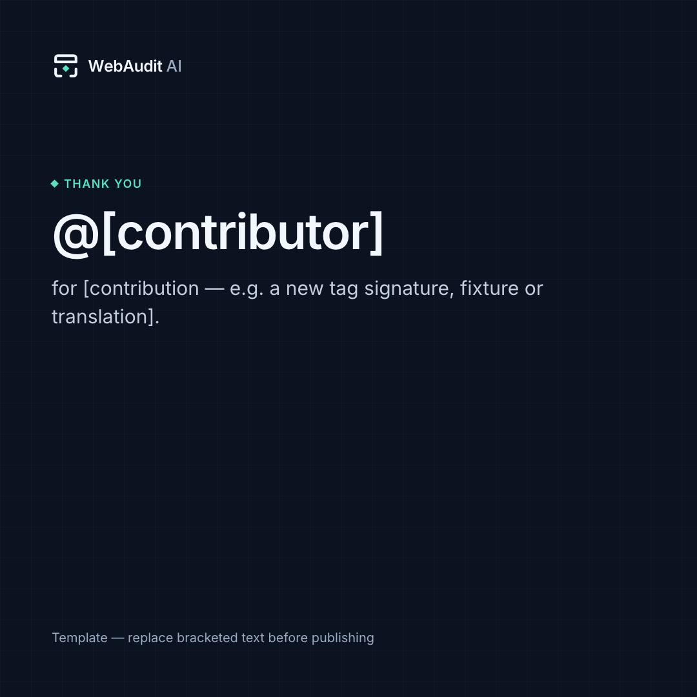
1080×1080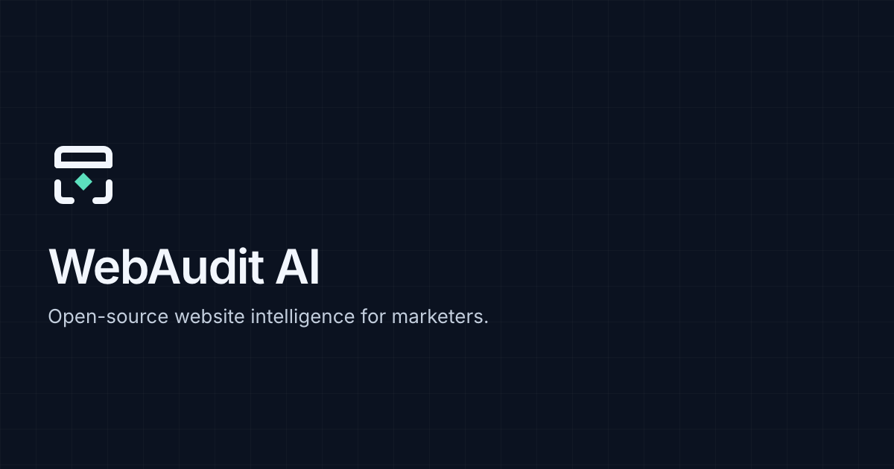
1200×630